Pusat informasi fasilitas kesehatan, industri, dan tempat populer di Batang
Rumah sakit yang menyediakan layanan medis umum dan spesialis dengan fasilitas yang cukup lengkap. Menjadi rujukan utama masyarakat Batang.
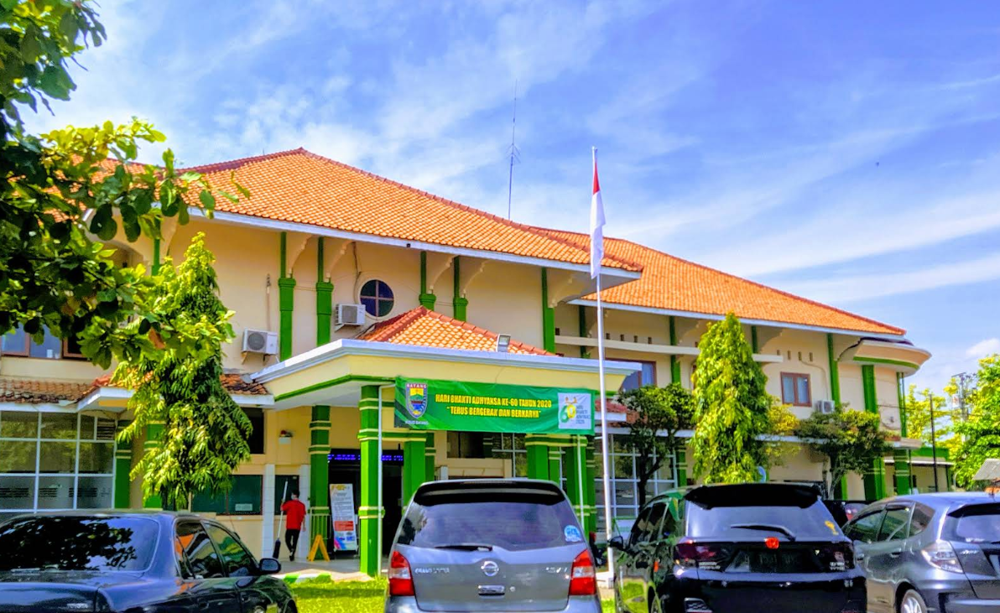
Rumah sakit modern dengan teknologi medis terbaru dan tenaga kesehatan profesional. Dikenal dengan pelayanan cepat dan fasilitas nyaman.
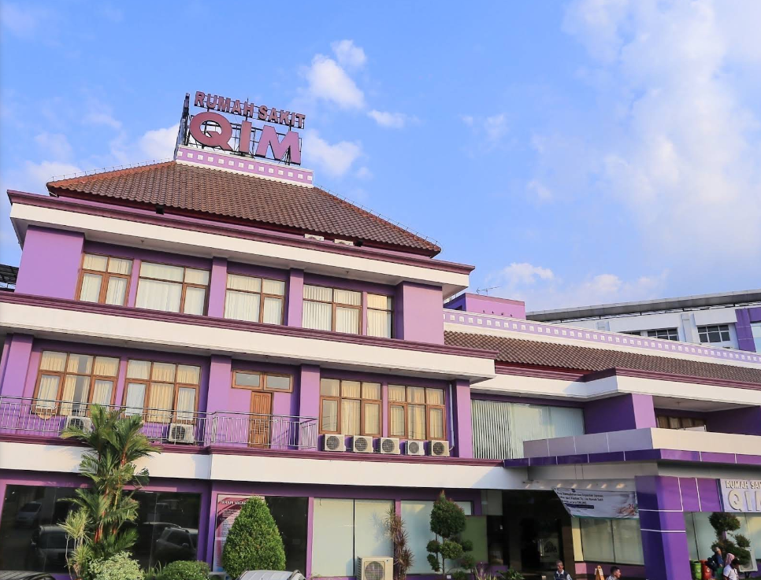
Melayani kebutuhan kesehatan dasar masyarakat seperti pemeriksaan umum, imunisasi, dan layanan ibu & anak.
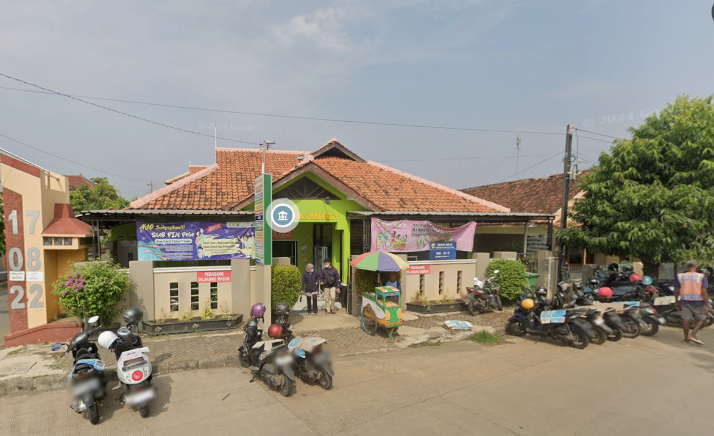
Pusat layanan kesehatan masyarakat dengan fokus pada pelayanan preventif dan edukasi kesehatan untuk wilayah Batang.
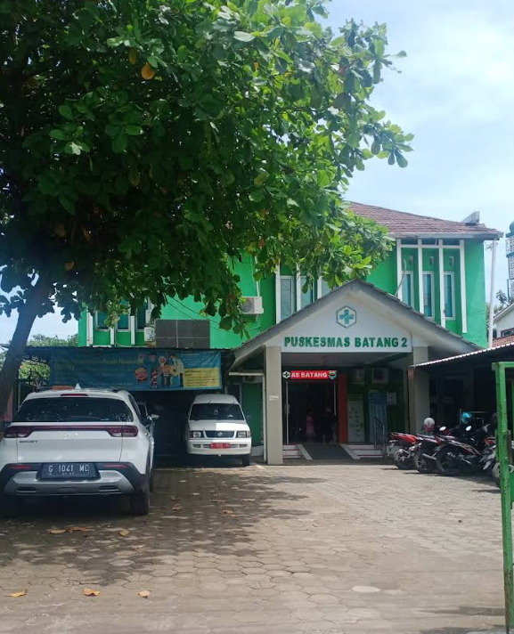
Tempat favorit masyarakat untuk bersantai, berolahraga, dan berkumpul bersama keluarga. Sering digunakan untuk acara dan kegiatan publik.
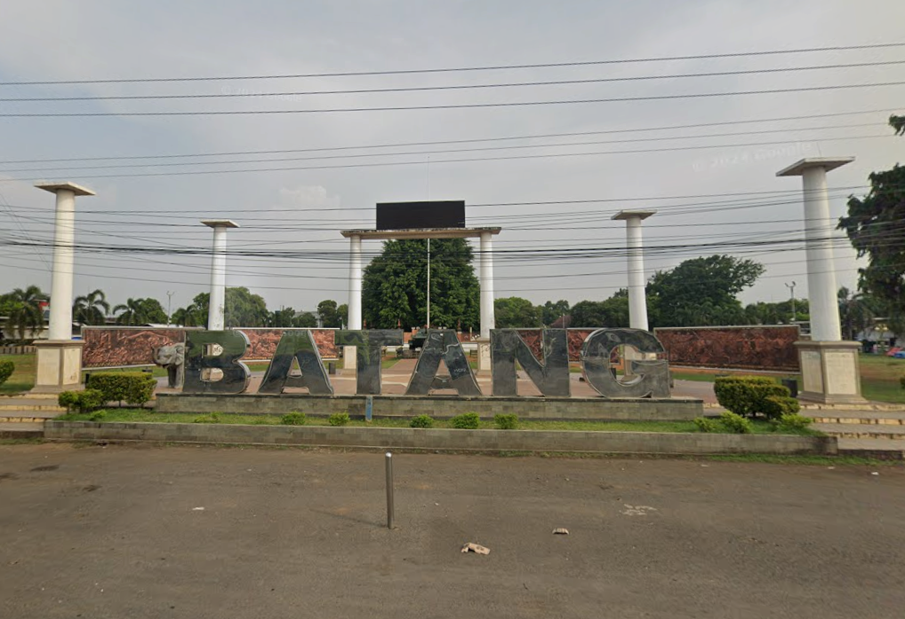
Bangunan resmi pemerintahan yang menjadi pusat kegiatan administratif dan acara kenegaraan di Kabupaten Batang.
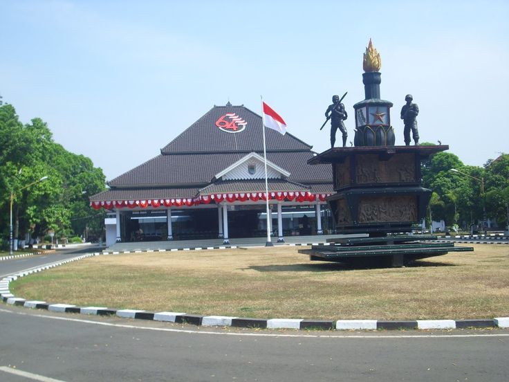
Kawasan industri bertaraf nasional yang menjadi pusat investasi dan membuka ribuan lapangan pekerjaan bagi masyarakat Batang.
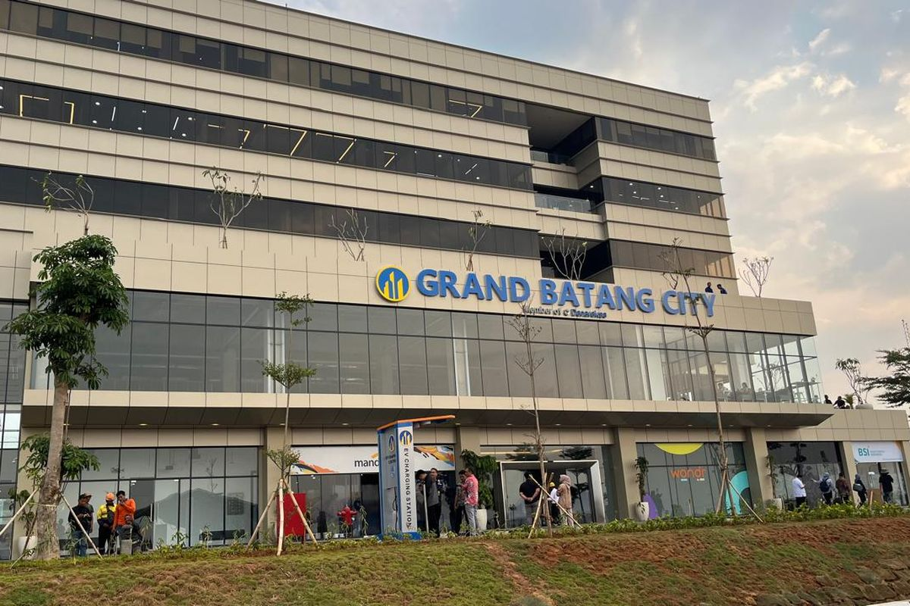
Kawasan industri yang berkembang pesat dan menarik banyak perusahaan besar nasional maupun multinasional di pantai utara Jawa.
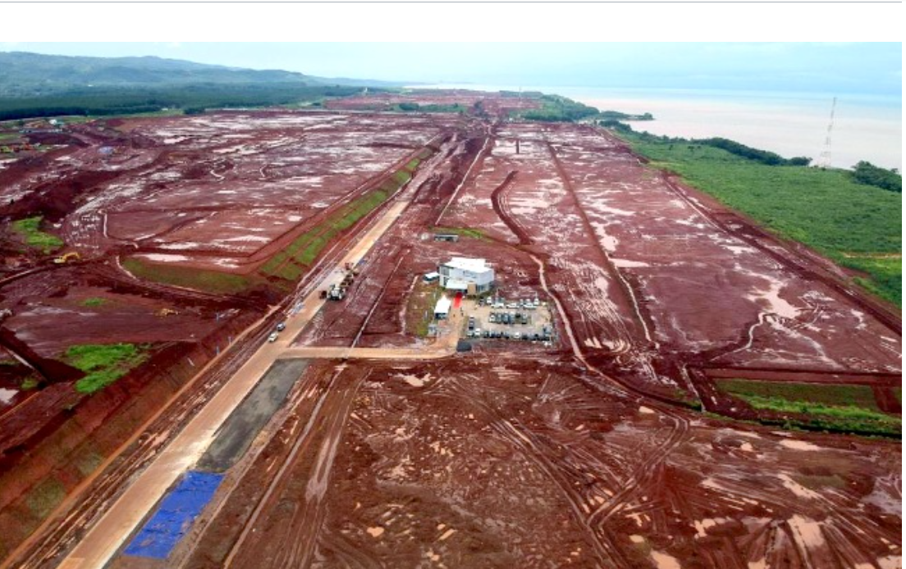
Tempat rekreasi dan pariwisata pantai untuk masyarakat Batang maupun wisatawan luar kota. Nikmati suasana pantai yang indah bersama keluarga.
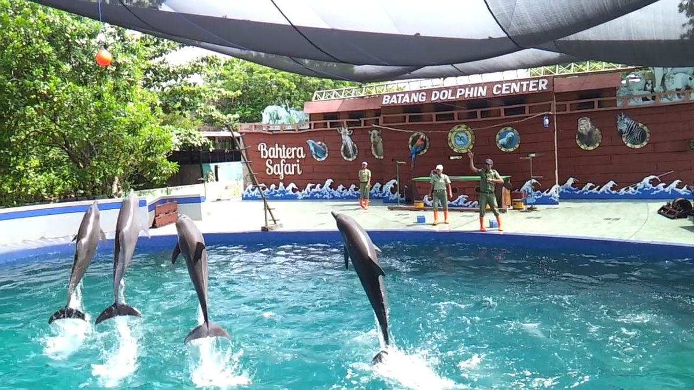
Taman wisata alam di pegunungan dengan udara segar dan pemandangan hijau yang memukau. Cocok untuk camping dan outbound keluarga.
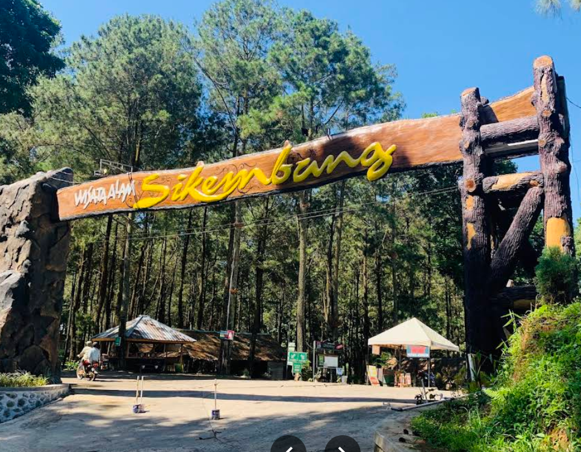
Tempat makan favorit pelajar dan mahasiswa. Jajanan kaki lima autentik dengan suasana lingkungan yang nyaman dan harga terjangkau.
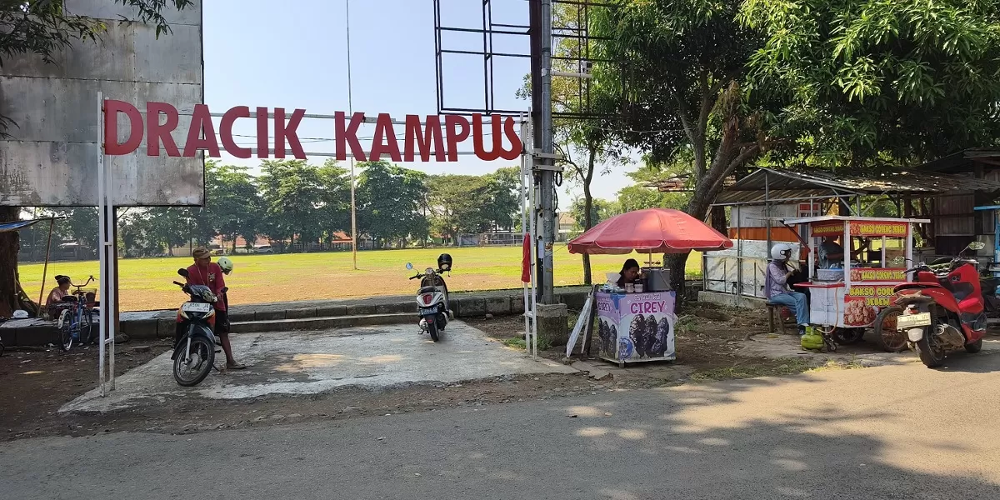
Pantai populer di Batang dengan pemandangan matahari terbenam yang indah. Tersedia berbagai fasilitas wisata dan kuliner seafood segar.
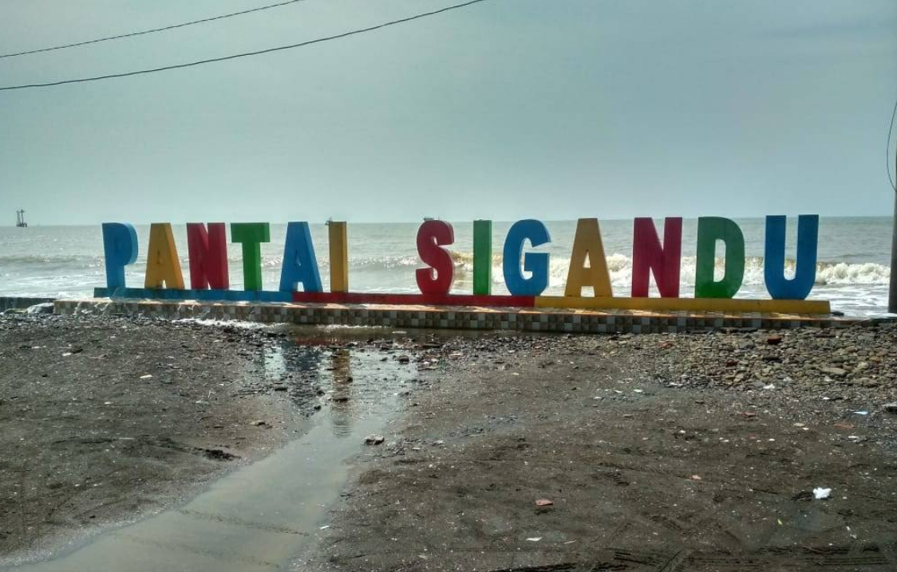